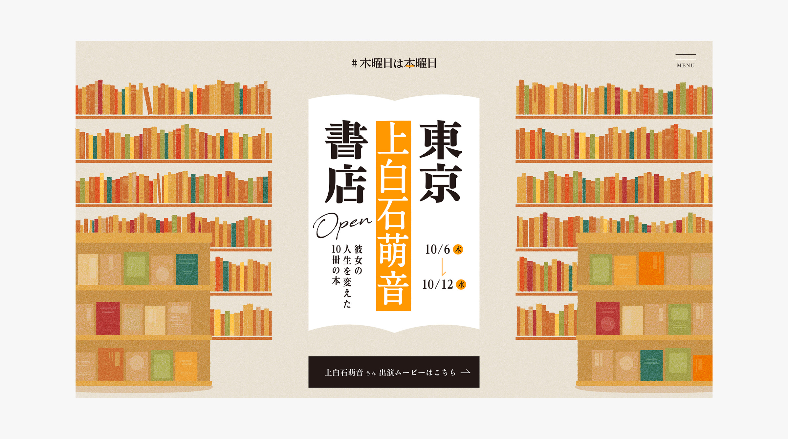
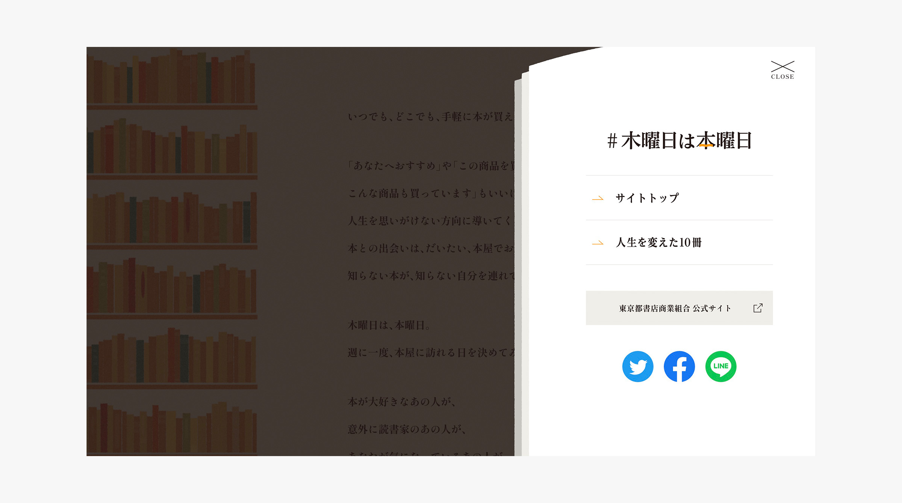

#木曜日は本曜日
本屋へ足を運ぶ習慣づくりを目指すプロジェクト「#木曜日は本曜日」。
本屋と本を愛する全20名の動画を載せた特設サイト制作を担当しました。
入店するようなオープニングアニメーションや、メニュー開閉時にペラペラとめくれる音を入れるなど、
“本屋ならでは”の演出も企画/提案しました。
ECD : Miura Takahiro CD : Tominaga Kei AD : Yokoyama Nori Pl : Matsumoto Yuki EPl/C : Kohiruimaki Yota PR : Platinum Pr/ Dr : Sato Yuka D : Matsuoka Asuka Illustrator : Matsuoka Asuka Dev : Namba Eisuke
2022